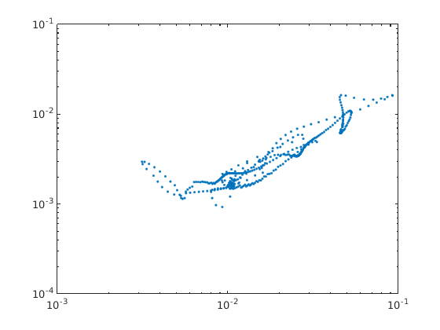
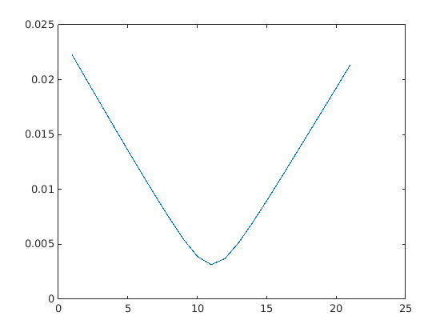

Partially resolve the blow-up problem at small distance
In out previous experiments, we use first N Flouqet vectors to span a subspace . when an ergodic trajectory approaches one selected po (ppo/rpo), the difference vector is recorded. The angle between the difference vector and the subspace is investigated. However, at short distances (very close shadowing), angle just belows up occacially. Later on, we find that the problem lies in the spacing of orbits. If it is too large, then calculation of difference vector is unreliable. Here, we take smaller integration time step after we obtain the raw data as so to illiminate the blow-up problem. We use one point in one relative periodic orbit to illustrate the process. The last figure is the final result.
Contents
- Load the data
- view distance-angle distribution
- view indivisual incidence
- one single problematic point
- use smaller time step to integrate the ergodic trajectory
- get the new difference vector
- apply this method to all the shadowing points of the above shadowing instances
- apply this method to all shadowing incidences
Load the data
All data comes from C++ simulation since collecting close approaches is computationally heavy. The initial conditions and Flouqet vectors are stored in HDF5 format.
ang = dlmread('angle'); ang = sin(acos(ang)); dis = dlmread('dis'); difv=dlmread('difv'); No = dlmread('No'); index = dlmread('indexPo'); index = index + 1; % original index % starts from 0 h5file = '/usr/local/home/xiong/00git/c/data/ks22h001t120x64EV.h5'; ppType = 'rpo'; ppId = 4; np = 5; gTpos = 4; a0 = h5read(h5file, ['/' ppType '/' num2str(ppId) '/a']); nstp = h5read(h5file, ['/' ppType '/' num2str(ppId) '/nstp']); T = h5read(h5file, ['/' ppType '/' num2str(ppId) '/T']); s = h5read(h5file, ['/' ppType '/' num2str(ppId) '/s']); h = T/nstp; aa = intg(a0, h, nstp, np); aa = aa(:,1:end-1); [aaHat, ~] = orbitToSlice(aa); h1 = figure(); plot3(aaHat(1,:), aaHat(3,:), aaHat(4,:)); title('rpo4 projected to subspace $[a_1, a_2, b_2]$', 'Interpreter','latex')
view distance-angle distribution
If we do nothing to the raw data, the distance-angle distribution looks like the following figure. Here, we consider the subspace consisting of the first 7 Flouqet vectors.
% view the total distribution h2 = figure(); loglog(dis, ang(:, 5), '.'); xlabel('$||\Delta x||_2$', 'Interpreter','latex'); ylabel('$\sin(\theta)$', 'Interpreter','latex'); title('distance-angle scattering plot', 'Interpreter','latex');
view indivisual incidence
Let's focus on a problematic incidence.
% select those which has certain shadowing time. threshT = 50/0.1; N = length(No); ixLargeT = []; for i = 1:N, if No(i)>threshT, ixLargeT = [ixLargeT, i]; end end % get the start and end index of a problematic incidence % ix = ixLargeT(2); ix = 9; x1=sum(No(1:ix))+1; x2=sum(No(1:ix+1)); h3 = figure(); loglog(dis(x1:x2), ang(x1:x2, 5), '.'); % plot the corresponding distance h4 = figure(); subplot(2,2,1); semilogy(dis(x1:x2)); % plot the distance grid on; subplot(2,2,2); plot(index(x1:x2)); % plot the corresponding index on po subplot(2,2,3); plot3(aaHat(1, x1:x2), aaHat(3, x1:x2), aaHat(4, x1:x2)); subplot(2,2,4); % calculate spacing spacing = zeros(x2-x1); for i = 1:x2-x1, spacing(i) = norm(aaHat(:,index(i-1+x1)) - aaHat(:, index(i+x1)) ); end plot(spacing);
one single problematic point
The above figure shows that when distance goes below , some scattering points blow up. Let's choose the leftmost point in the above figure for consideration. First check that it is realy the minial distance between this ergodic point and rpo4. As shown in the figure below, we indeed find the point on rpo4 which is closest to this ergodic point. Denote the point on rpo4 and the ergodic point as and respectively.
[minDis, pid] = min(dis(x1:x2)); % get the index of smallest distance pid = pid - 1; disp([minDis, ang(x1+pid, 5), index(x1+pid)]); % confirm the index is correct pointPo = aaHat(:, index(x1+pid)); a0Ergo = pointPo + difv(x1+pid, :)'; % recover the ergodic point dif = repmat(a0Ergo, 1, 21) - aaHat(:, index(x1+pid)-10 : ... index(x1+pid)+10); nor = []; for i = 1:21, nor = [nor, norm(dif(:,i))]; end figure(); plot(nor);
0.00313714122946728 0.00295408820870727 111
use smaller time step to integrate the ergodic trajectory
now, we decrease the integration time time to recalculate the ergodic trajectory, and try to find the new ergodic point which has shortest distance to . As can be inferred in the following figure, and the printout, point and are very close to each other.
pointPo = aaHat(:, index(x1+pid-1)); a0Ergo = pointPo + difv(x1+pid-1, :)'; [aaErgo, ~] = intg2M1(a0Ergo, 0.001, 0.2); [N, M] = size(aaErgo); difNorm = zeros(M, 1); newDifv = zeros(N, M); for i = 1:M, newDifv(:,i) = aaErgo(:,i) - aaHat(:, index(x1+pid)); %pointPo; difNorm(i) = norm(newDifv(:,i)); end figure(); plot(difNorm); [newMinDis, minIndex] = min(difNorm); disp(newMinDis); oldDifv = difv(x1+pid, :)'; trueDifv = aaErgo(:, minIndex) - aaHat(:, index(x1+pid)); % print out the first 10 components of old and new difference vectors disp([oldDifv(1:10), trueDifv(1:10)]);
0.00313213248812494
0.000515638949843522 0.000527189807004225
6.59194920871187e-17 3.81691293802778e-17
-0.000928029245557016 -0.000968185858569004
0.0010224716316698 0.00100447602666953
0.000666909358502686 0.000739837248392883
-0.00235680331401578 -0.0023407415946699
0.000165874533143984 0.000194415759555422
-0.000702573071553914 -0.000588421646555426
-0.000557301351640598 -0.000616199321807648
0.000808289812496144 0.000794292865595764
get the new difference vector
Now, we try to calculate the angle for the new difference vector. What amazed me is that even thougth and are very similar to each other, their angles formed with Flouqet subspace have difference as large as one order, as showned in the printout. The figure below shows that the new angle point (red dot) lies in the asymptotic direction. The black dot is the original data.
% load Flouqet vectors ve = h5read(h5file, ['/' ppType '/' num2str(ppId) '/ve'], [1, index(x1+pid)], ... [30*62,1]); ve = reshape(ve, 62, 30); ve = veToSlice(ve, aa(:, index(x1+pid)) ); % transform to slice ve = [ve(:,1:gTpos-1), ve(:, gTpos+1:end)]; % get rid of one % tangent direction oldAngle = sin( subspace( oldDifv, ve(:, 1:7)) ); newAngle = sin( subspace( trueDifv, ve(:, 1:7)) ); % print out the original angle and new angle disp([oldAngle, newAngle]); % plot the old point and new point figure(); loglog(dis(x1:x2), ang(x1:x2, 5), '.'); hold on; scatter(dis(x1+pid), ang(x1+pid, 5), 'k', 'filled'); scatter(newMinDis, newAngle, 'r', 'filled');
0.00295408820877851 0.000584089778567998
apply this method to all the shadowing points of the above shadowing instances
The following figure shows the new distance-angle scattering plot compared to the above figure. The part with large difference vector does not change too much. Only the small-distance part changes within our expectation.
subsp = 3:9; % the number of Floquet vectors to span the subspace Nsubsp = length(subsp); %Ntotal = length(dis); newAngle = zeros(x2-x1, Nsubsp); % new angle newDis = zeros(x2-x1, 1); % new distance for i=x1+1:x2, pointPo = aaHat(:, index(i-1)); a0Ergo = pointPo + difv(i-1,:)'; [aaErgo, tt] = intg2M1(a0Ergo, 0.001, 0.2); [N, M] = size(aaErgo); difNorm = zeros(M,1); newDifv = zeros(N, M); for j = 1:M, newDifv(:, j) = aaErgo(:, j) - aaHat(:, index(i)); difNorm(j) = norm(newDifv(:,j)); end [newMinDis, minIndex] = min(difNorm); trueDifv = newDifv(:, minIndex); ve = h5read(h5file, ['/' ppType '/' num2str(ppId) '/ve'], [1, index(i)], ... [30*62,1]); ve = reshape(ve, 62, 30); ve = veToSlice(ve, aa(:, index(i)) ); % transform to slice ve = [ve(:,1:gTpos-1), ve(:, gTpos+1:end)]; % get rid of one % tangent direction newDis(i-1) = newMinDis; for j = 1:Nsubsp, newAngle(i-1, j) = sin( subspace( trueDifv, ve(:, 1:subsp(j))) ); end end figure(); loglog(newDis, newAngle(:, 5), '.');
apply this method to all shadowing incidences
%{ subsp = 3:9; % the number of Floquet vectors to span the subspace Nsubsp = length(subsp); %Ntotal = length(dis); Ntotal = 2000; newAngle = zeros(Ntotal-1, Nsubsp); % new angle newDis = zeros(Ntotal-1, 1); % new distance % start from the second point for i = 2:Ntotal, if(mod(i, 100) == 0) fprintf('******* i = %d ******** \n', i); end pointPo = aaHat(:, index(i-1)); a0Ergo = pointPo + difv(i-1,:)'; [aaErgo, tt] = intg2M1(a0Ergo, 0.001, 0.2); [N, M] = size(aaErgo); difNorm = zeros(M,1); newDifv = zeros(N, M); for j = 1:M, newDifv(:, j) = aaErgo(:, j) - aaHat(:, index(i)); difNorm(j) = norm(newDifv(:,j)); end [newMinDis, minIndex] = min(difNorm); trueDifv = newDifv(:, minIndex); ve = h5read(h5file, ['/' ppType '/' num2str(ppId) '/ve'], [1, index(i)], ... [30*62,1]); ve = reshape(ve, 62, 30); ve = veToSlice(ve, aa(:, index(i)) ); % transform to slice ve = [ve(:,1:gTpos-1), ve(:, gTpos+1:end)]; % get rid of one % tangent direction newDis(i-1) = newMinDis; for j = 1:Nsubsp, newAngle(i-1, j) = sin( subspace( trueDifv, ve(:, 1:subsp(j))) ); end end figure(); loglog(newDis, newAngle(:, 5), '.'); %}